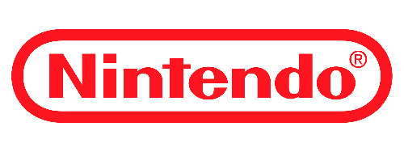
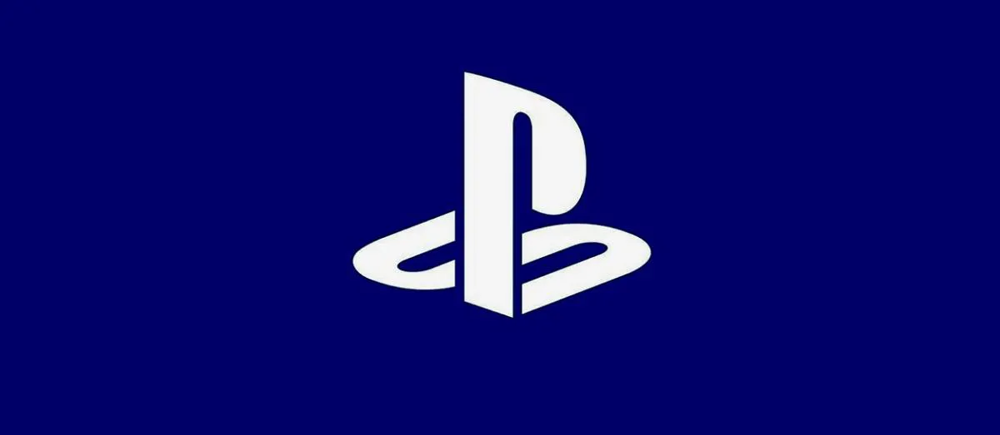

La gran titan, de los titanes, nacida en 1889, ha sido inovadora con muchas cosas, como videojuegos y sus consolas, con su mascota Super Mario, ha hecho muchas cosas a los videojuegos, incluso salvandolos de su muerte entre el '83 y el '85.

La compañia que nacio gracias a las malas acciones de nintendo con sony, naciendo de esta buenas sagas como crash bandicoot, resident evil, God of war, entre otras.
El intento que salio bien de microsoft en adentrarse a los videojuegos, con tres consolas en las ultimas eras de las consolas, y con sagas como la de halo, minecraft, Gears of war, y otras sagas mas.
Sega, la vieja rival de nintendo en los noventas, con su mascota, el erizo mas rapido sonic, logro intentar quedarse con sus consolas como la genesis, la saturn, la dreamcast, entre otros.

Otra clasica de los videojuegos, con sus juegos como la saga de Contra, Silent hill, Metal Gear Solid, Pes, entre otras, tambien esta es creadora del codigo konami, el cual es todo un clasico.
La compañia la cual eran dos, squaresoft y enix, uniendose en el año de 2003, con los clasicos rpgs como la saga de Final Fantasy, Chrono Trigger, o Dragon Quest, tambien con otros proyectos como la saga de Life is Strange, el juego de los vengadores, la saga de Tomb Raider de 2013, entre otros.

De las primeras compañias de videojuegos, con videojuegos que actualmente se ven pobres o feos, pero que en su epoca era una inovacion, algo nuevo, con su juego mas conocido pong, y ports de otros videojuegos, como donkey kong o pac man a sus consolas, atari a logrado quedarse en el corazón de mucha gente.
Otra compañia que eran antes dos, bandai y namco, con juegos clasicos de arcades como pac man, galaga, galaxian, y recientemente con la saga de Dragon Ball Z: Budokai Tenkaichi, la saga de tekken, la saga de naruto Shippuden, y otros juegos o sagas mas.